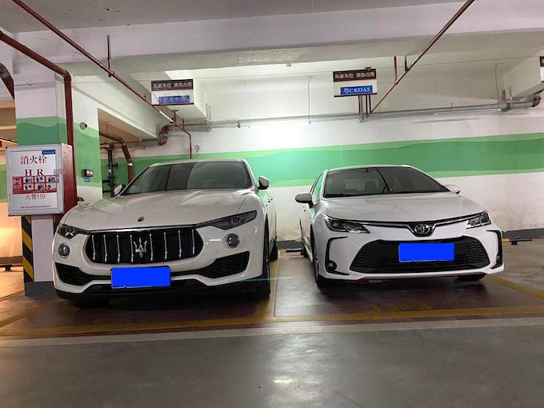

我曾经是别人眼中的“豪车车主”。
之前我陆续购入了所谓代表着身份和品味的座驾：一台约40万的奔驰，一台约80万的讴歌，直到现在，我的车库里还停着一台过百万的玛莎拉蒂莱万特。
然而，直到最近，因为一些实际的代步需求，我随手买了一台丰田卡罗拉双擎（混动）作为补充。这台十几万的小车，彻底颠覆了我过去对汽车价值的认知，仿佛一记轻柔的耳光，将我从“豪车梦”中唤醒。
我发现过去我花重金购置的所谓“豪车”，在很多方面，尤其是在最核心的“代步”功能上，竟然显得如此… 缺乏价值感。
我现在依然开着那台玛莎拉蒂莱万特，一台新车价格足以买下大概10台卡罗拉。你可能会想，10倍的价格，驾驶感受总该好10倍吧？
我的结论是：完全不值。
单论市区拥堵路段的驾驶体验，玛莎拉蒂甚至还不如卡罗拉。在走走停停的市区，卡罗拉小巧的车身要灵活得多，在车流中穿梭更显游刃有余。更关键的是，卡罗拉混动系统在低速时主要依靠电机驱动，起步平顺、安静且响应迅速，那种丝滑灵动的感受，是体型庞大、发动机随时准备轰鸣的玛莎拉蒂无法比拟的。
当然，到了高速上，玛莎拉蒂的优势确实能体现出来：加速更快、底盘更稳、过弯更有信心，整体的“质感”也更强。但这所谓的“豪车感受”，真的值得用10倍的价格去获取吗？对我而言，在法定限速内行驶，卡罗拉的表现也完全够用，那种边际效益极低的提升，与高昂的价格相比，显得微不足道。
除了驾驶体验，更让我感到震惊的是用车成本的巨大差异。
玛莎拉蒂在市区开，油耗能轻松达到1.5元/公里甚至更高，高速好一点，也要1元/公里左右。而卡罗拉混动呢？市区油耗通常只有4-5毛/公里，仅仅是玛莎拉蒂的约1/3！高速油耗也大致维持在相似的比例。
更别提保养成本了。卡罗拉的常规小保养，几百块钱就能搞定。而玛莎拉蒂呢？进一次保养车间，随便就过万，大保养更是天文数字。
让我们算一笔账。假设同样开一万公里：
你看，仅仅是油费和保养费，玛莎拉蒂的用车成本就是卡罗拉的整整4倍！这还没算上高昂的保险费、可能的维修费用（豪车维修也贵得离谱）。
一台价格是普通车10倍的豪车，用车成本是普通车4倍，带来的“核心”驾驶体验（尤其是日常通勤），甚至不如普通车。从这个角度看，所谓豪车的性价比，简直低到令人发指。
我过去在买车上投入的几百万，现在想来，真是不值得。我曾经以为拥有一台豪车能带来多大的满足感和便利性，但实际体验下来，发现那种满足感更多是虚荣心的膨胀。而便利性一台卡罗拉足以提供，甚至因为其经济性和可靠性而更加省心。
汽车，其最本质的功能，就是一个代步工具。它存在的意义是把你从A点安全、可靠、相对舒适地送到B点。
而卡罗拉作为一款纯粹的代步车，它在满足出行需求方面的表现，已然是优秀甚至卓越的了。它省油、耐用、维护成本低、在城市里灵活方便，安全配置也日益完善。它完美地阐述了作为“工具”的职责。
既然是代步工具，我们真的有必要花上百万，去追求那些边际效益极低、甚至在某些核心体验上还不如便宜车的所谓“豪华感”吗？
我过去被各种营销、面子蒙蔽了双眼，没有想明白这一点。直到坐进这台十几万的卡罗拉，在日常通勤中感受到它的省心、省力、省钱和恰到好处的灵活便捷时，我才真正豁然开朗。
所以，如果你问我，开过百万豪车后，现在开十几万的卡罗拉是什么感受？我会告诉你：这才是真正让我感到“值”的座驾。汽车的价值，真的不在于价格标签上的数字有多大，而在于它能否高效、可靠、经济地满足你最基本的出行需求，让你把更多的金钱和精力，投入到生活中真正能带来幸福感的事情上。